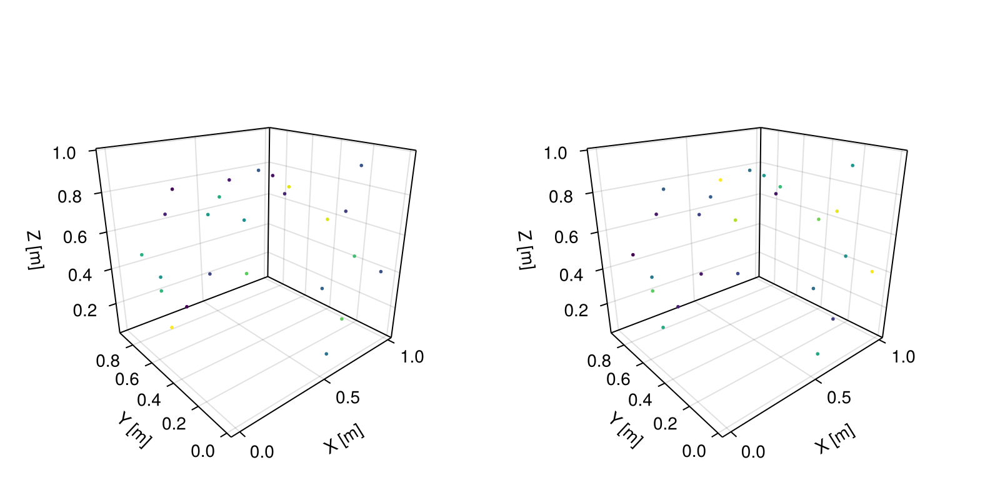
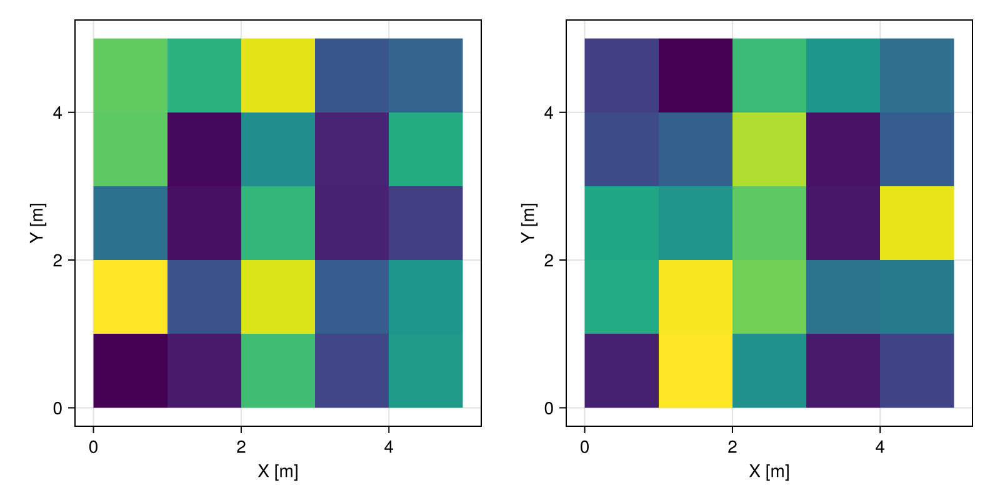
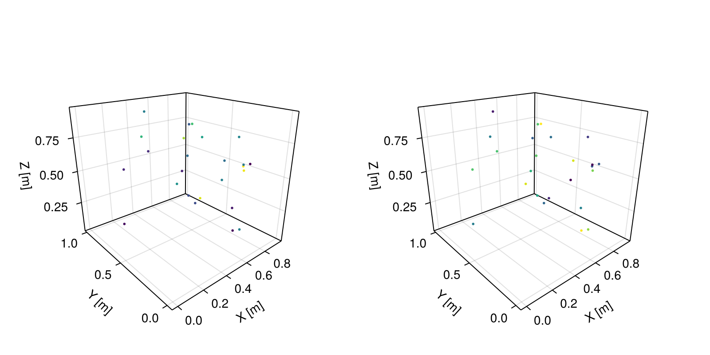
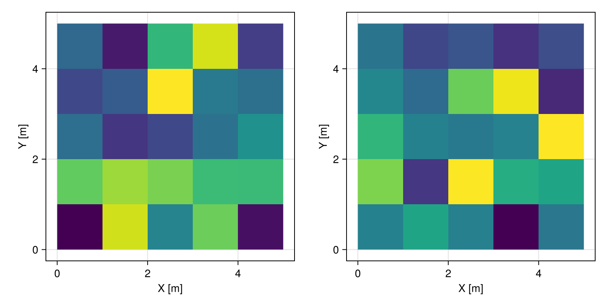
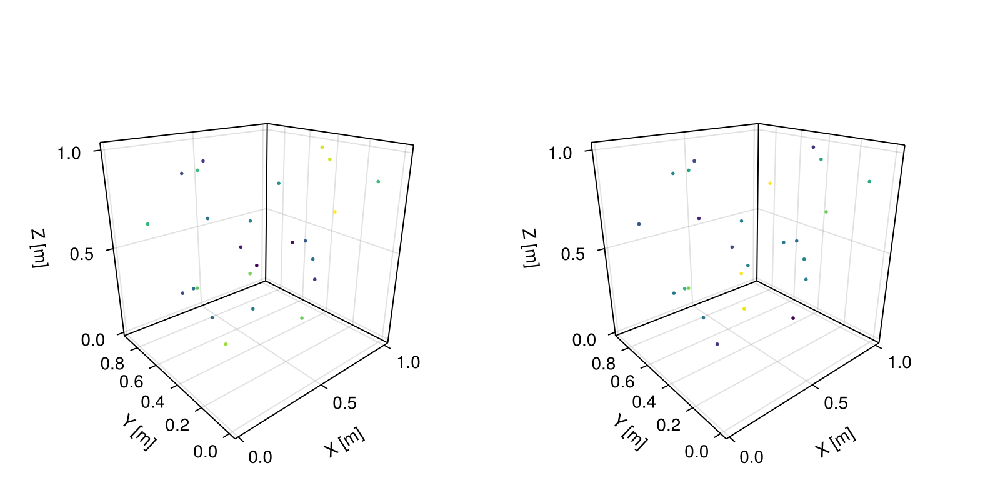
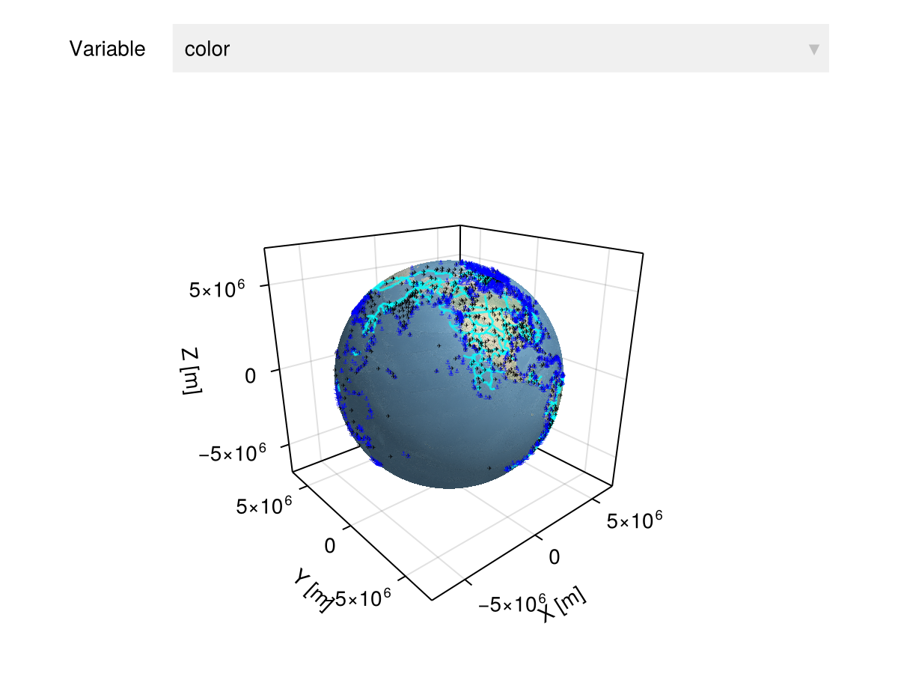

Geospatial data
Overview
Given a table or array containing data, we can georeference these objects onto a geospatial domain with the georef function. The result of the georef function is a GeoTable. If you would like to learn this concept in more depth, check out the recording of our JuliaEO 2024 workshop:
GeoTables.georef — Function
georef(table, domain)Georeference table on domain from Meshes.jl
Examples
julia> georef((a=rand(100), b=rand(100)), CartesianGrid(10, 10))georef(table, geoms)Georeference table on vector of geometries geoms from Meshes.jl
Examples
julia> georef((a=rand(10), b=rand(10)), rand(Point, 10))georef(table, coords; [crs], [lenunit])Georeference table using coordinates coords of points.
Optionally, specify the coordinate reference system crs, which is set by default based on heuristics, and the lenunit (default to meters for unitless values) that can only be used in CRS types that allow this flexibility. Any CRS or EPSG/ESRI code from CoordRefSystems.jl is supported.
Examples
julia> georef((a=[1, 2, 3], b=[4, 5, 6], [(0, 0), (1, 1), (2, 2)])
julia> georef((a=[1, 2, 3], b=[4, 5, 6], [(0, 0), (1, 1), (2, 2)], crs=LatLon)
julia> georef((a=[1, 2, 3], b=[4, 5, 6], [(0, 0), (1, 1), (2, 2)], crs=EPSG{4326})
julia> georef((a=[1, 2, 3], b=[4, 5, 6], [(0, 0), (1, 1), (2, 2)], lenunit=u"cm")georef(table, names; [crs], [lenunit])Georeference table using coordinates of points stored in column names.
Optionally, specify the coordinate reference system crs, which is set by default based on heuristics, and the lenunit (default to meters for unitless values) that can only be used in CRS types that allow this flexibility. Any CRS or EPSG/ESRI code from CoordRefSystems.jl is supported.
Examples
georef((a=rand(10), x=rand(10), y=rand(10)), ("x", "y"))
georef((a=rand(10), x=rand(10), y=rand(10)), ("x", "y"), crs=LatLon)
georef((a=rand(10), x=rand(10), y=rand(10)), ("x", "y"), crs=EPSG{4326})
georef((a=rand(10), x=rand(10), y=rand(10)), ("x", "y"), lenunit=u"cm")georef(tuple)Georeference a named tuple on CartesianGrid(dims), with dims obtained from the arrays stored in the tuple.
Examples
julia> georef((a=rand(10, 10), b=rand(10, 10))) # 2D grid
julia> georef((a=rand(10, 10, 10), b=rand(10, 10, 10))) # 3D gridThe functions values and domain can be used to retrieve the table of attributes and the underlying geospatial domain:
Base.values — Function
values(geotable, [rank])Return the values of geotable for a given rank as a table.
The rank is a non-negative integer that specifies the parametric dimension of the geometries of interest:
- 0 - points
- 1 - segments
- 2 - triangles, quadrangles, ...
- 3 - tetrahedrons, hexahedrons, ...
If the rank is not specified, it is assumed to be the rank of the elements of the domain.
GeoTables.domain — Function
domain(geotable)Return underlying domain of the geotable.
Examples
using GeoStats
import CairoMakie as Mke
# helper function for plotting two
# variables named T and P side by side
function plot(data)
fig = Mke.Figure(size = (800, 400))
viz(fig[1,1], data.geometry, color = data.T)
viz(fig[1,2], data.geometry, color = data.P)
fig
endplot (generic function with 1 method)Tables
Consider a table (e.g. DataFrame) with 25 samples of temperature T and pressure P:
using DataFrames
table = DataFrame(T=rand(25), P=rand(25))| Row | T | P |
|---|---|---|
| Float64 | Float64 | |
| 1 | 0.0208782 | 0.0993302 |
| 2 | 0.085129 | 0.97269 |
| 3 | 0.688086 | 0.501316 |
| 4 | 0.221951 | 0.0807183 |
| 5 | 0.536715 | 0.21001 |
| 6 | 0.982587 | 0.595669 |
| 7 | 0.265601 | 0.965182 |
| 8 | 0.931488 | 0.769232 |
| 9 | 0.302135 | 0.377108 |
| 10 | 0.525804 | 0.402398 |
| 11 | 0.381404 | 0.580484 |
| 12 | 0.0600118 | 0.513905 |
| 13 | 0.656718 | 0.73683 |
| 14 | 0.106003 | 0.0740384 |
| 15 | 0.199122 | 0.940303 |
| 16 | 0.743692 | 0.230959 |
| 17 | 0.03914 | 0.307281 |
| 18 | 0.492679 | 0.860345 |
| 19 | 0.110449 | 0.0632862 |
| 20 | 0.608397 | 0.296207 |
| 21 | 0.75207 | 0.192197 |
| 22 | 0.634007 | 0.0165497 |
| 23 | 0.941516 | 0.667118 |
| 24 | 0.275274 | 0.517242 |
| 25 | 0.327954 | 0.362685 |
We can georeference this table based on a given set of points:
georef(table, rand(Point, 25)) |> plot
or alternatively, georeference it on a 5x5 regular grid (5x5 = 25 samples):
georef(table, CartesianGrid(5, 5)) |> plot
Another common pattern in geospatial data is when the coordinates of the samples are already part of the table as columns. In this case, we can specify the column names:
table = DataFrame(T=rand(25), P=rand(25), X=rand(25), Y=rand(25), Z=rand(25))
georef(table, ("X", "Y", "Z")) |> plot
Arrays
Consider arrays (e.g. images) with data for various geospatial variables. We can georeference these arrays using a named tuple, and the framework will understand that the shape of the arrays should be preserved in a CartesianGrid:
T, P = rand(5, 5), rand(5, 5)
georef((T=T, P=P)) |> plot
Alternatively, we can interpret the entries of the named tuple as columns in a table:
georef((T=vec(T), P=vec(P)), rand(Point, 25)) |> plot
Files
The GeoIO.jl package can be used to load/save geospatial data from/to various file formats:
GeoIO.load — Function
GeoIO.load(fname; repair=true, layer=1, lenunit=nothing, numtype=Float64, warn=true, kwargs...)Load geospatial table from file fname stored in any format.
Please use the formats function to list all supported file formats. GIS formats with missing geometries are considered bad practice. In this case, we provide the auxiliary function loadvalues with similar options.
Various repairs are performed on the stored geometries by default, including fixes of orientation in rings of polygons, removal of zero-area triangles, etc. Some of the repairs can be expensive on large data sets. In this case, we recommend setting repair=false. Custom repairs can be performed with the Repair transform from Meshes.jl.
It is also possible to specify the layer to read within the file, the length unit lenunit of the coordinates when the format does not include units in its specification, and the number type numtype of the coordinate values. The function displays a warning whenever a file with multiple layers is loaded. The warning can be disabled by setting warn=false.
Other kwargs options are forwarded to the backend packages and are documented below.
Options
CSV
coords: names of the columns with point coordinates (required option);- Other options are passed to
CSV.File, see the CSV.jl documentation for more details;
GSLIB
- Other options are passed to
GslibIO.load, see the GslibIO.jl documentation for more details;
GeoJSON
- Other options are passed to
GeoJSON.read, see the GeoJSON.jl documentation for more details;
GeoParquet
- Other options are passed to
GeoParquet.read, see the GeoParquet.jl documentation for more details;
Shapefile
- Other options are passed to
Shapefile.read, see the Shapefile.jl documentation for more details;
OFF
defaultcolor: default color of the geometries if the file does not have this data (default toRGBA(0.666, 0.666, 0.666, 0.666));
VTK formats (.vtu, .vtp, .vtr, .vts, .vti)
- mask: name of the boolean column that encodes the indices of a grid view (default to
:mask). If the column does not exist in the file, the full grid is returned;
Common Data Model formats (NetCDF, GRIB)
x: name of the column with x coordinates (default to"x","X","lon", or"longitude");y: name of the column with y coordinates (default to"y","Y","lat", or"latitude");z: name of the column with z coordinates (default to"z","Z","depth", or"height");t: name of the column with time measurements (default to"t","time", or"TIME");
Examples
# load GeoJSON file
GeoIO.load("file.geojson")
# load GeoPackage file
GeoIO.load("file.gpkg")
# load GeoTIFF file
GeoIO.load("file.tiff")
# load NetCDF file
GeoIO.load("file.nc")GeoIO.loadvalues — Function
GeoIO.loadvalues(fname; rows=:all, layer=1, numtype=Float64, warn=true, kwargs...)Load values of geospatial table from file fname stored in any GIS format, skipping the steps to build the domain (i.e., geometry column).
The function is particularly useful when geometries are missing. In this case, the option rows=:invalid can be used to retrieve the values of the rows that were dropped by load. All other kwargs options documented therein for GIS formats are supported, including the layer, numtype, and warn options.
Examples
# load all values of shapefile, ignoring geometries
GeoIO.loadvalues("file.shp")
# load values of shapefile where geometries are missing
GeoIO.loadvalues("file.shp"; rows=:invalid)GeoIO.save — Function
GeoIO.save(fname, geotable; warn=true, kwargs...)Save geotable to file fname of given format based on the file extension.
Please use the formats function to list all supported file formats.
The function displays a warning whenever the format is obsolete (e.g. Shapefile). The warning can be disabled with the warn keyword argument.
Other kwargs options are forwarded to the backend packages and are documented below.
Options
CSV
coords: names of the columns where the point coordinates will be saved (default to"x","y","z");floatformat: C-style format string for float values (default to no formatting);- Other options are passed to
CSV.write, see the CSV.jl documentation for more details;
GSLIB
- Other options are passed to
GslibIO.save, see the GslibIO.jl documentation for more details;
GeoJSON
- Other options are passed to
GeoJSON.write, see the GeoJSON.jl documentation for more details;
GeoParquet
- Other options are passed to
GeoParquet.write, see the GeoParquet.jl documentation for more details;
Shapefile
- Other options are passed to
Shapefile.write, see the Shapefile.jl documentation for more details;
MSH
vcolumn: name of the column in vertex table with node data, ifnothingthe geometries will be saved without node data (default tonothing);ecolumn: name of the column in element table with element data, ifnothingthe geometries will be saved without element data (default tonothing);
OFF
color: name of the column with geometry colors, ifnothingthe geometries will be saved without colors (default tonothing);
STL
ascii: defines whether the file will be saved in ASCII format, otherwise Binary format will be used (default tofalse);
Common Data Model formats (NetCDF, GRIB)
x: name of the column where the coordinate x will be saved (default to CRS coordinate name);y: name of the column where the coordinate y will be saved (default to CRS coordinate name);z: name of the column where the coordinate z will be saved (default to CRS coordinate name);t: name of the column where the time measurements will be saved (default to"t");
Examples
# set layer name in GeoPackage
GeoIO.save("file.gpkg", layername = "mylayer")GeoIO.formats — Function
formats([io]; sortby=:extension)Displays in io (defaults to stdout if io is not given) a table with all formats supported by GeoIO.jl and the packages used to load and save each of them.
Optionally, sort the table by the :extension, :load or :save columns using the sortby argument.
using GeoIO
zone = GeoIO.load("data/zone.gpkg")| 4×4 GeoTable over 4 GeometrySet | |||
| zone | area | perimeter | geometry |
|---|---|---|---|
| Categorical | Continuous | Continuous | MultiPolygon |
| [NoUnits] | [NoUnits] | [NoUnits] | 🖈 GeodeticLatLon{SAD69} |
| Estuario | 1.30772e11 | 5.8508e6 | Multi(21×PolyArea) |
| Fronteiras Antigas | 1.01412e12 | 9.53947e6 | Multi(1×PolyArea) |
| Fronteiras Intermediarias | 1.11502e12 | 1.01743e7 | Multi(1×PolyArea) |
| Fronteiras Novas | 6.5273e11 | 7.09612e6 | Multi(2×PolyArea) |
Artifacts
The GeoArtifacts.jl package provides utility functions to automatically download geospatial data from repositories on the internet.
using GeoArtifacts
# download artifacts from naturalearthdata.com
earth = NaturalEarth.naturalearth1("water")
borders = NaturalEarth.borders()
airports = NaturalEarth.airports()
ports = NaturalEarth.ports()
# initialize viewer with a coarse "raster"
earth |> Upscale(10, 5) |> viewer
# add other elements to the visualization
viz!(borders.geometry, color = "cyan")
viz!(airports.geometry, color = "black", pointsize=4, pointmarker='✈')
viz!(ports.geometry, color = "blue", pointsize=4, pointmarker='⚓')
# display current figure
Mke.current_figure()